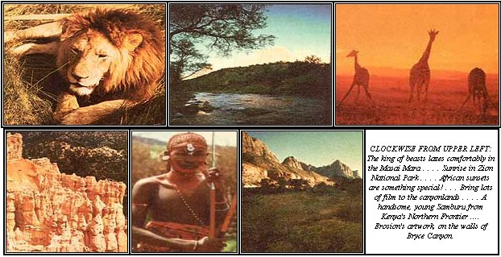

By the time you receive this magazine . . . MOTHER's first group of adventuresome travelers will be back on their native soil after an in-depth, firsthand look at the use of preventive medicine and natural cures in the Soviet Union. (Over 40% of that nation's prescription medicine is obtained from herbs!) We plan to give you a special report on the state of health and nutrition in the U.S.S.R.-based upon information gathered during the tour-in an upcoming issue of this publication.
In the meantime, though, another group of "explorers" will set off (from July 7 to 29) to learn all about the cultures and crafts-both past and present-of the soaring Andes mountains and the still-unspoiled jungles of the upper Amazon!
It's not too late to reserve your spot in one of our "travel that teaches" journeys . . . but you'll have to act immediately in order to do so. MOTHER's 24-day Kenya Ecological Safari (August 3-26)-cosponsored with Nature Expeditions International-is still taking last-minute reservations. Call MOTHER's Tour Director, Sara Pacher-at 704/693-0211-for details and a reservation form.
Here's just a hint of what you can expect from this foot-and-microbus ramble through some of East Africa's greatest game reserves and national parks.
Kenya is one of those remarkable lands which seem to have everything: A partial list of the nation's attractions includes the semi-desert of the Northern Frontier . . . the majestic slopes of Mt. Kenya . . . the incredible lake country of the Rift Valley . . . the vast, open Masai Mara . . . the white sand coastal beaches . . . spectacular wild animals . . . over 400 species of birds . . . and a truly fascinating array of more than 80 distinct and different tribes. Consequently, this African country rates as one of the most beautiful and interesting areas in the world. Also, by incorporating free enterprise in its financial structure, Kenya has evolved into a model African state.
Our tour (after an overnight stop in London) begins in Nairobi . . . the safari capital of the world. Festooned with bougainvillea in a variety of colors, this metropolis is a cosmopolitan, bustling, pleasant city . . . with first-class hotels, a superb museum (renowned for its exhibits dealing with the history of man), excellent bookstores, a fine university, wide boulevards, and throngs of people: Africans, Asians, and Europeans. (It's been said that if one were to wait long enough in the New Stanley Hotel's Thorntree Cafe just about every famous personality on the planet would eventually stroll through.)
Nairobi also offers a multitude of handicrafts you'll want to buy and take home . . . such as batik, jewelry, spears and shields, handsome carvings, paintings of wildlife, and other products made by the area's many tribal artisans.
After two days in Nairobi, we'll hop into our microbuses and travel with professional African drivers . . . chosen not only for their ability to negotiate difficult terrain, but also for their rapport with the natives and knowledge of animal and bird life.
As we cross Kikuyu Territory and start up the slopes of Mt. Kenya, some of the finest farms in all Africa will be seen stretching off toward the horizon. This country-with its exhilarating climate and crystal-clear air-is known as "the white highland" and offers a panorama of luxuriant greenery.
Our introduction to Mt. Kenya itself begins with a nature walk (along the Siriman track) from the forest zones at the 9,000-foot level to the open moorlands at 11,000 feet . . . and-if you're up to it-into the alpine zone above 13,000 feet! (The top of this sprawling, extinct volcano-17,022 feet at its highest point-is permanently robed in snow and has 12 active glaciers draped along its shoulders.) The area is a botanical wonderland . . . with lobelias that grow up to 10 feet, colossal 18- to 20-foot senecios, and many plants-familiar as small shrubs on the North American continent-which turn into giants under the equatorial sun.
Besides the forest elephants, hogs, buffalo, and a variety of antelopes . . . we'll have a chance to meet the hyrax. These two-pound bundles of fur (their closest living relative is the African pachyderm!) are not afraid of man and may, on occasion, even crawl into your lap to be fed.
When we descend from the vast plateau into the desert of the Northern Frontier, high-country houses with thatched roofs and bamboo lacework will give way to adobe shacks . . . roofed with corrugated metal to withstand the low-country heat. This flatland has less vegetation than do the mountain slopes, but euphorbia trees-with long, succulent, leafless branches-are scattered like 30-foot candelabra through the wide plains of the Samburu Reserve.
The tribespeople that live in this area are-like their Masai relatives-semi-nomadic . . . and depend upon cattle for their livelihood. While the highland Kikuyu tribe has rapidly adjusted to western lifestyles, the Samburu have managed to stay aloof from such transitions. They still walk around in red-colored blankets with little underneath . . . each man carries a spear, a knife, a sheath, and a stick to tend the cattle . . . their hair is textured with a combination of mud and cow manure . . . their faces are painted red during tribal dances . . . and blood mixed with milk or urine is their main source of protein.
In days past, a Samburu's advance to manhood was marked by a lion kill, and today-when dressed in their fancy regalia and sporting their spears-these tall, slim, Nilo-Hamitic people with long, straight noses still appear to be formidable opponents . . . against man or beast!
The reserve itself has one of the world's largest populations of the "Northern" types of animals . . . such as the reticulated giraffe, the gerenuk, the Somali ostrich, and Grevy's zebra. And although the "big cats" are less abundant than the other beasts, you'll also see lions, cheetahs, and leopards.
After traveling several hundred miles to the south, we'll explore Kenya's largest national park, Tsavo, noted for its huge herds of elephants . . . often colored red by the ocher of the surrounding volcanic soil. (In times of drought, the area's big baobab trees are knocked down by the pachyderms and consumed as a source of moisture.) The nearby Amboseli Park, one of the most photogenic of Kenya's wildlife sanctuaries, will provide us with an excellent place to see cheetahs in action.
Imagine all of these visual treats-as well as the Rift Valley Lakes, the huge animal migrations of the Masai Mara, and Lake Victoria with its nearby Kakamega and Kaimosi rain forests-and you'll have some idea of what this incredible expedition (under the knowledgeable guidance of Richard Peirce, professor of biology at Pasadena City College) is all about.
The cost is only $1,590 plus airfare, and-for an additional $390-you can extend your vacation for another week . . . while we explore the exotic, colorful Kenya coast.
Safaris, however, are not limited to strange, faraway places. With the help of NEI we've planned another outdoor expedition that's closer to home . . . in the spectacular canyonland country of Utah.
We'll camp out in style from September 21 to 30, while we examine-with cameras in hand-the off-the-beaten-track areas of Capitol Reef National Monument and Zion and Bryce Canyon National Parks. Best of all, we'll get to see this multi-colored land under the experienced guidance of Steve Crouch -a world-famous nature photographer-who will help us to capture the exceptional scenic grandeur on film.
MOTHER's tour members will have the opportunity to explore and photograph the awesome formations in red, green, chocolate, gray, yellow, and lavender that are found in Cathedral Valley and Muley Twist Canyon . . . truly the Navajo's "land of the sleeping rainbow". We'll hike from plateau tops into deep canyons . . . so intricately interwoven that the entire country seems to be composed of gorges, cliffs, and mesas which change their tones and moods with the time of day and the weather.
There'll also be ample time for personal discussions with Steve, question-and-answer sessions, photo critiques . . . and just plain relaxing while the camp staff prepares our meals.
This Canyonland Nature Photography Safari is priced at $790 from Cedar City, Utah . . . and $100 will hold a place for you. (According to our agreement with NEI, the initial deposit for any expedition is refundable up to 60 days before departure, less a $50 handling charge.) Send your deposit or write for further information to MOTHER's Tours, P.O. Box A, Flat Rock, North Carolina 28726.
But don't wait . . . you deserve an exciting adventure now!
|
 |
|
|